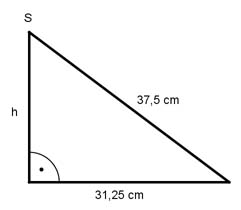

Aufgabe 246 Von einem Blech mit einem Durchmesser von 75 cm wird ein Kreisausschnitt mit einem Mittelpunktswinkel von 60° abgeschnitten und aus dem Rest ein Kegel hergestellt. Wie groß sind dessen Höhe h, sein Grundkreisradius r und sein Volumen V? Der Kreisauschnitt mit dem Mittelpunktswinkel von 60° ist 1/6 der ursprünglichen Kreisfläche. r = d/2 = 75 cm/2 = 37,5 cm = Mantellinie s des Kegels Restumfang U ohne Kreisausschnitt = Umfang des Kegelgrundkreises: 5 5 U = --- * 2 * л * r = --- * 2 * л * 37,5 cm = 196,25 cm 6 6 U = 2 * л * r |:2*л U ------ = rl 2 * л 196,25 cm r = ------------ = 31,25 cm 2 * л  Satz von Pythagoras zur Berechnung der Höhe h: 37,5² cm² = h² + 31,25² cm² | -31,25² h² = 37,5² cm² - 31,25² cm² h² = 1 406,25 cm² - 976,5625² cm² = 429,7 cm² |√ h = 20,7 cm л * rKegel² * h л * 31,25² cm² * 20,7 cm V = ----------------- = --------------------------- = 3 3 V = 21 158 cm³ = 21,2 dm³